This guide begins with a short overview of Eagle board design, and then ends of the guide describes board design commands in more detail.
Before you get started, make sure you have downloaded gone through the Eagle Setup tutorial. Do that first, and you will have the example files used in this guide, as well as the correct Eagle settings for you design files to be milled on a Bantam milling machine.
Guide Contents:
In the Homemade Hardware repository folder, go to:
homemade-hardware/projects/eagle-board-design/1_attiny85_jig
There you will find two files, attiny85_jig.brd and attiny85_jig.sch
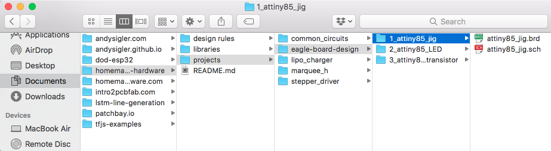Eagle designs are split between two files; the schematic file (.sch), and the board file (.brd). These two files are linked together. When you open one, the other will be automatically opened.
These two files must have the same name, or else they will lose their link. Once a link is broken, it can be impossible to link them again. Therefore, always:
In the schematic, you add and remove parts in the circuit, and you create the connections between them. This tutorial does not discuss the schematic file, but starts with some already designed schematics.
Open the file attiny85_jig.brd by double-clicking it. Eagle will then show you it's contents.
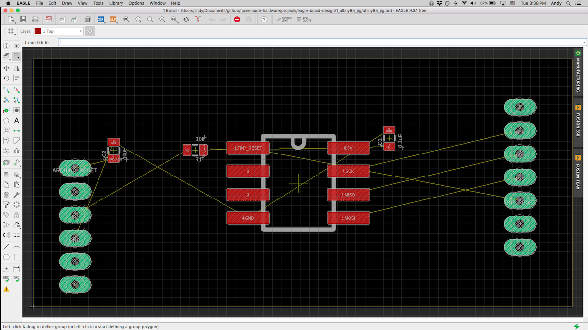In the top-left corner, you'll find a button to the right of a printer icon. Hover over it, and you'll see this button is the "Switch to schematic" button.
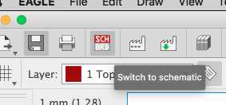Click it, and it will switch over to the schematic file.
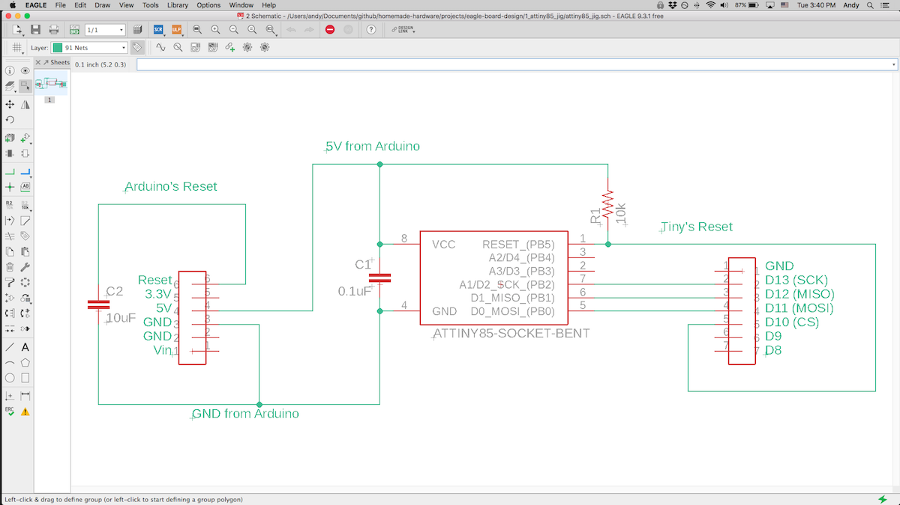Press that same button again, and you will switch over to your board file.
If a board file has not been created (there is only a .sch file), then pressing this button will generate a brand new .brd with the same name as the .sch file. Magic!
In the board file, we are moving things around a lot, or drawing things. To help us do this, Eagle has a grid system that constrains your movements. For example, if your grid is set to 1 millimeter, then you will only be able to move or draw things in 1 millimeter increments.
Go to the board file, and look back up at the top-left corner. There is a button called "Grid". Click it, and you will see a window open.
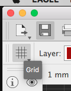This window has different settings for the grid. If you want to see a change take affect, press the OK button.
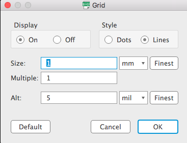The "Display (On/Off)" setting allows you to turn on/off the visibility of the grid. If you turn it off, the grid will still be there, but you won't be able to see it.
The "Style (Dots/Lines)" setting allows you to set the style of your grids visibility.
The "Size" setting is what you will be changing all the time, because it controls the resolution of the grid. You can choose your units (mic, mm, mil, inch), as well as the grid step-size.
Smaller grid sizes (0.025-0.25mm) are good for when drawing traces, and larger step sizes (0.25-2mm) are good for placing parts and drawing your board cutout.
The board designer uses layers to separate different parts of the drawing. For example, copper is on the 1 Top layer, and the board cutout is on the 20 Dimension layer.
When designing a board, you can:
To change wich layer you are drawing on, click the dropdown menu at the top-left of the screen.
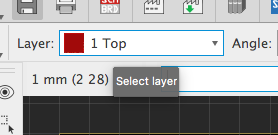It will open a menu like this (rotated 90 degrees):
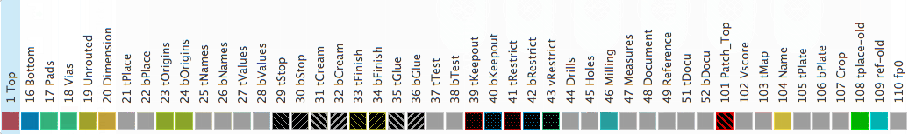There are a lot of layers! We usually only care about maybe 10 of these, and they're near the top of the list. A few are
For now, click 1 Top to keep the top layer selected.
You can also change which layers are visible by clicking the "Layer settings..." button.
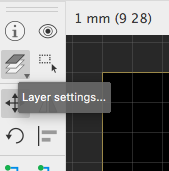Here you can show/hide individual layers, or hide/show them all.
This is useful if, for example, you want to move all of the parts on your board, but not the cutout lines. You could hide the 20 Dimension layer, then group-move all your parts.
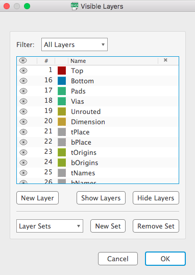To move a part, click to "Move" button on the left, underneath the "Layers settings..." button.
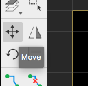To move a part, click the part's origin (the cross or "t" ). Most parts have the origin at their center, but some have their origin elsewhere, so watch out.
Once you click the origin, you can let go of the mouse, and freely move the part around. Click again to drop it.
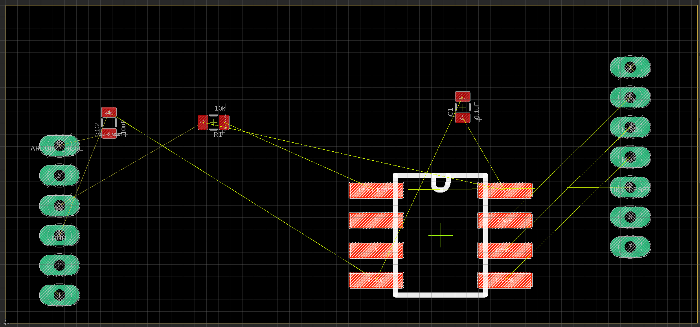Click to "Rotate" button, below the "Move" button, to rotate an part around it's origin.
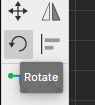Click any part's origin cross, and it will rotate 90 degrees around that origin.
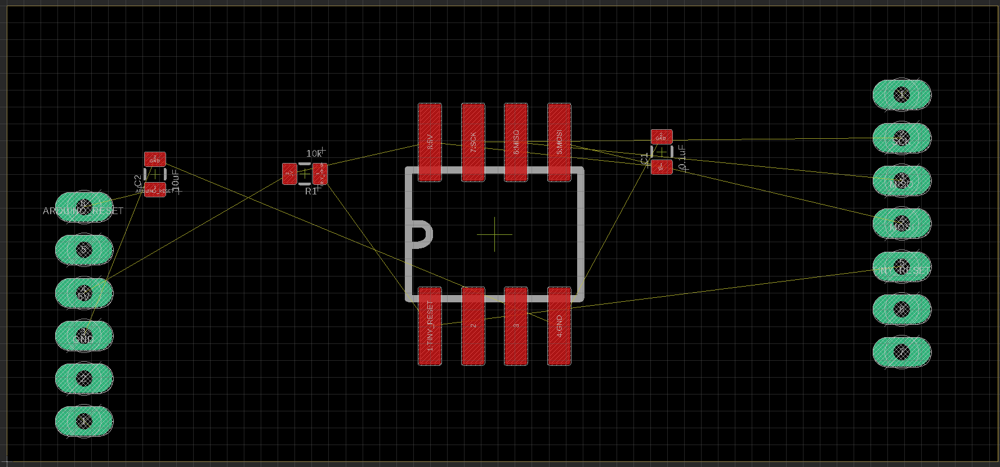You can change the angle by entering a new number in the input at the top.
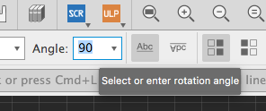And, you can rotate while running a move command (only 90 degrees). While in the middle of a move command, press ctrl-CLICK (or RIGHT-CLICK on a mouse), and the part with rotate 90 degrees while still moving with your cursor.
If you draw a line on layer 20 Dimension, then that line will be part of your board cutout. When you first create a new .brd file, there will already be a square drawn that is 100x100 millimeters.
Notice how the inside of the square is automatically black, and the outside is grey.
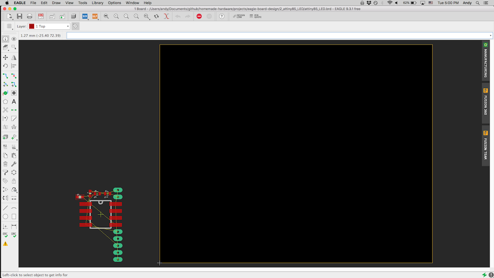Let's delete one of those lines. Click the "Delete" button (near the middle of the toolbar).
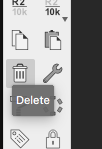Click one of the lines on the Dimension layer, and the square will no longer be complete. The entire background is now black, because there is no enclosed cutout for the board.
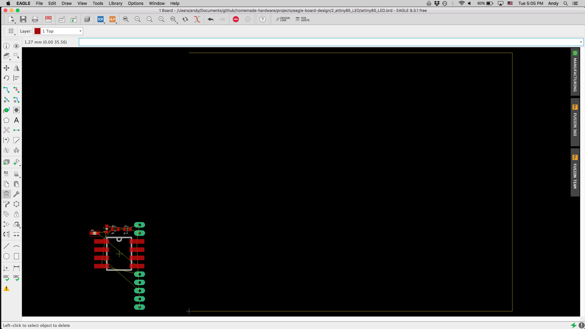To draw a new line, completing the cutout, use the "Line" tool (near the bottom of the toolbar).
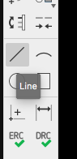Change the layer to 20 Dimension, and set the width to 0.
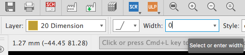Set your grid to 10mm. This is so the line you draw lines up perfectly with the old lines. Eagle does not have any snapping vertices feature when drawing simple lines, so you have to connect lines with some effort.
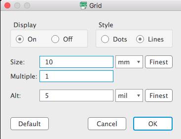Now the square is complete again, so the outside of it is grey again.
Dimension lines can also be moved, using the "move" command. If you click the center of a line, the whole line with move. If you click a point where two lines means, you will move that shared point.
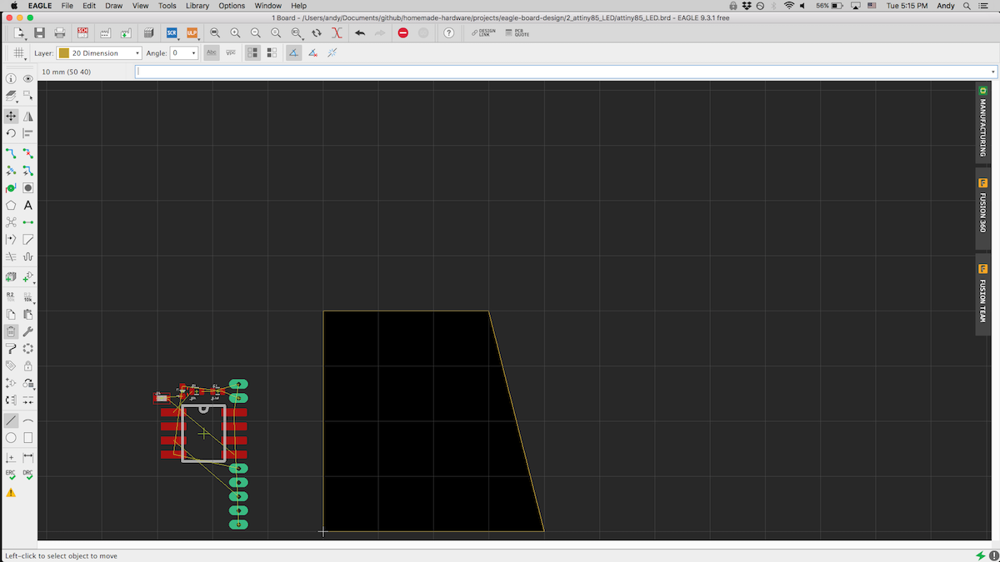In addition to drawing an board cutout in Eagle, you can also import a DXF file which draws the shape of your PCB.
I will be using Adobe Illustrator to draw a vector image, then will export to DXF, and final import to Eagle's 20 Dimension layer.
First in Illustrator, I'll start with a new document. I'll use the Pen tool to draw both straight and curved lines.
(Don't judge me, I'm not a visual designer)
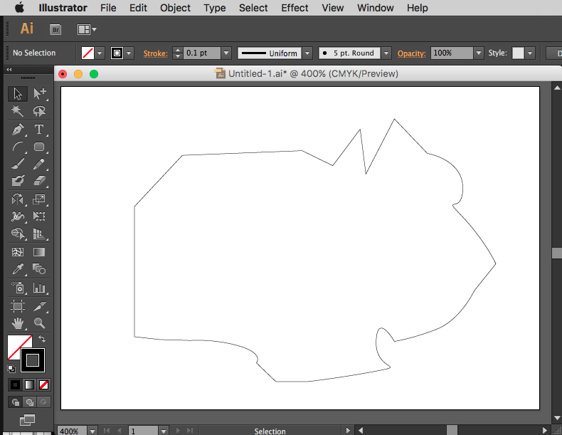Before we export to a DXF file, we first need to Add Anchor Points to the curved portions, and then Simplify everything to create straight lines.
I'll use the Add Anchor Point tool to draw a bunch of anchor points on the curves in my line.
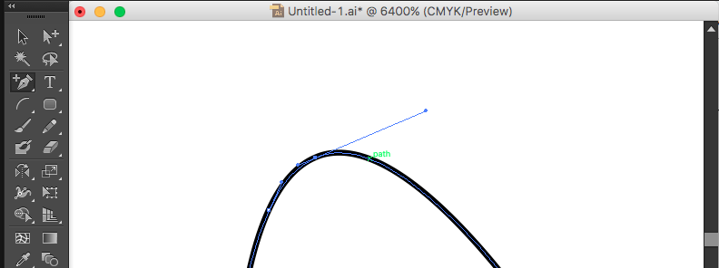Then I'll highlight everything in the drawing.
With everything highlighted, I go to Object -> Path -> Simplify...
In the window that opens, select the Straight lines checkbox
Press OK to simplify the drawing.
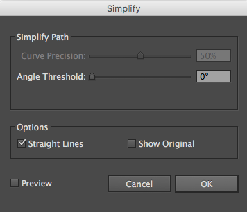Now all the arcs are made of straight lines. If the straight lines ruined your curves, undo and draw more anchor points.
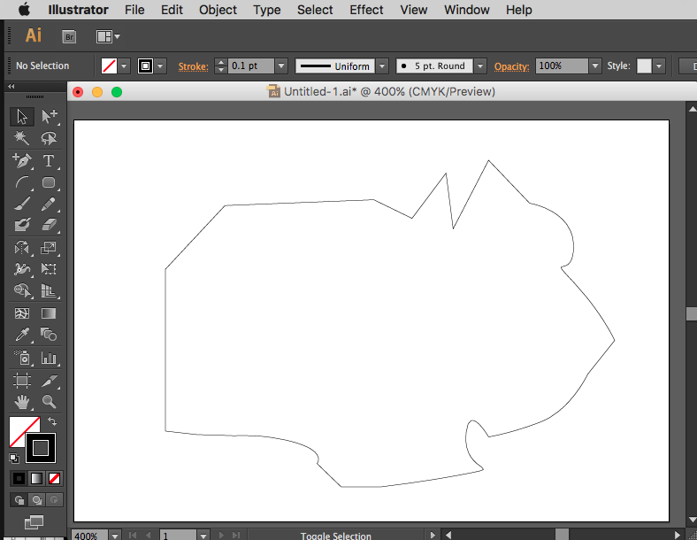Now it's time to export. Go to File -> Export, and be sure to select the DXF file format as the output.
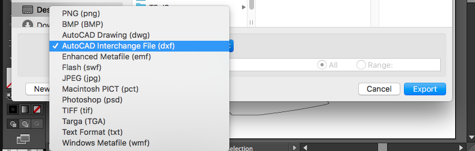Now we are done with Illustrator, and going back to Eagle.
At the top of the board editor, there is a button labelled ULP, near the zoom tools.
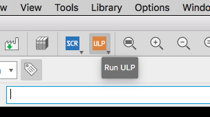Clicking this button will open a window showing many scripts that are available. These are scripts either written by Eagle developers, or Eagle users, that can import, export, and edit parts of your Eagle file.
Scroll down until you find the import-dxf script. Highlight it, and press OK.
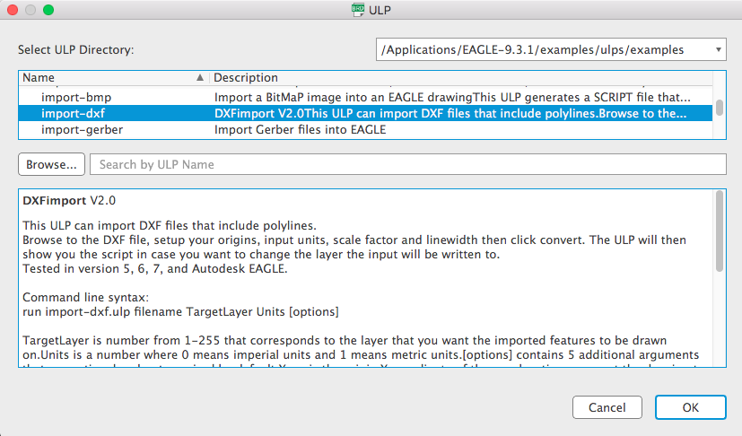After running the script, a new window will open with options for how to import the DXF file.
First, select the correct DXF file source. Then, select the 20 Dimension layer as the "Target layer" (because I want this to be my board cutout).
Then finally, select the correct "Input Units", to make sure the DXF file is scaled to the correct size. If your Illustrator file was using millimeters, select millimeters. If it was using inches, select inches.
Then, click OK.
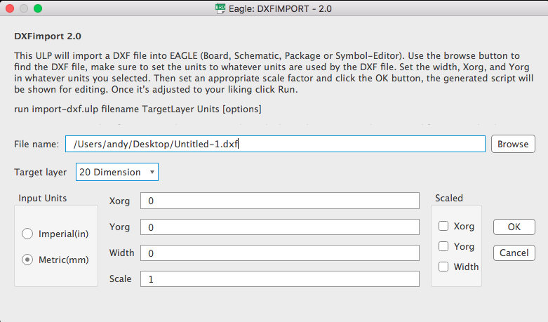After you click OK, a new window will appear. This new window is filled with all the individual Eagle drawing command to create your drawing (Eagle is weird).
Press RUN to execute the drawing commands.
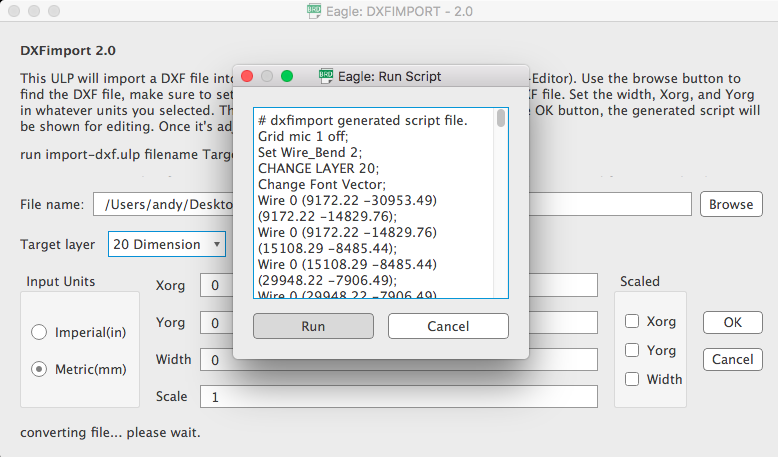The drawing will now be drawn on layer 20 Dimension, creating a strange looking board cutout for this PCB.
Maybe I should draw something different...
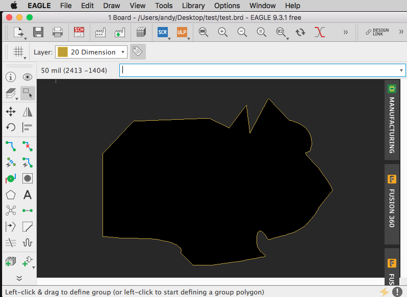All those thin yellow lines in the 19 Unrouted are showing you what connections you need to draw. These yellow connections were made in the schematic, so you can't delete them from the board design.
To complete a yellow line, use the "Route" command.
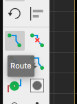Click-release on a yellow line, and you will start drawing a copper trace. By default, the line will create a 45 degree angle while you move it.
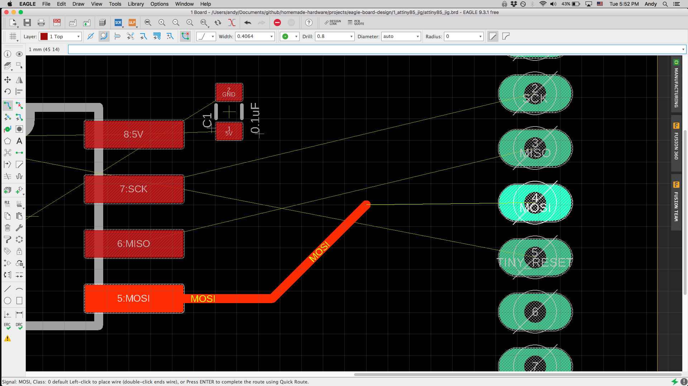You can create an anchor point by clicking
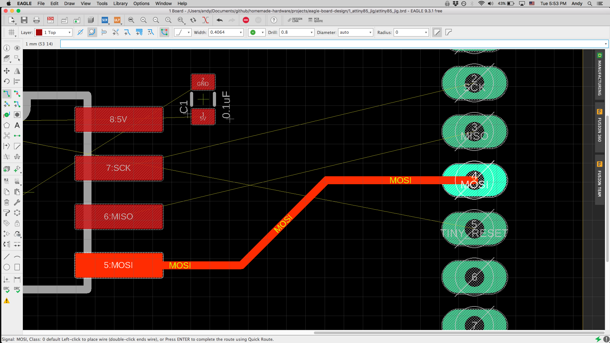You can stop drawing a route by pressing the ESC key.
The width of the routes is set in an input field at the top. A safe range for DIY PCBs is 0.6-1.0 millimeters, and to keep the widths no smaller than 0.4 millimeters
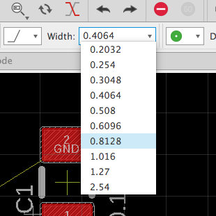The bigger the width, the easier it is for a milling machine (or anything else) to make the trace. So if a trace can be bigger, definitely do it.
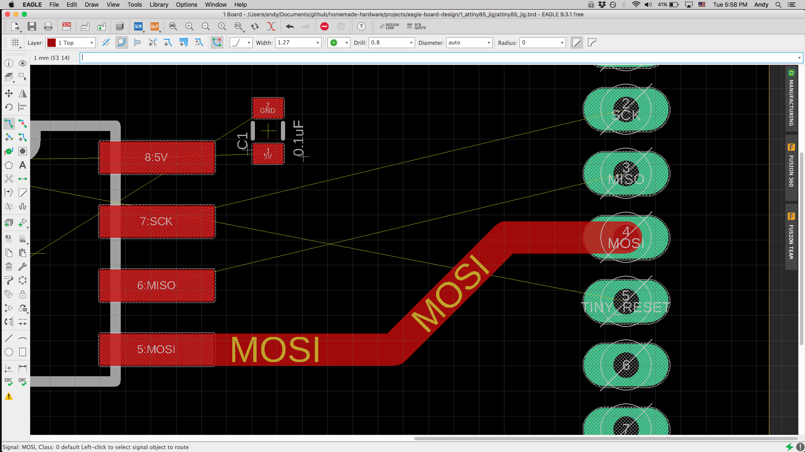You can also change the shape of your routes with the "Bend", "Radius", and "Miter" settings.
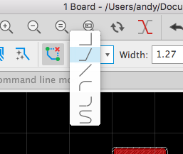The "Bend" setting changes how the route makes turns. You have a few options, including 90 degree angle, circular arc, and just a straight line.
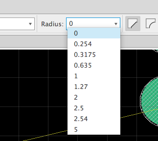The "Radius" setting change how sharply it can make turns. Zero means it turns immediately, and 5 millimeters would mean it completely turns after 5 millimeters.
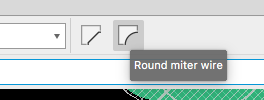The "Miter" setting lets you pick if the turns in a route should be either 1) rounded corners, or 2) 45 degree straight lines.
The new route below uses the 45 degree "Bend", a 5 millimeter "Radius", and a rounded "Miter"
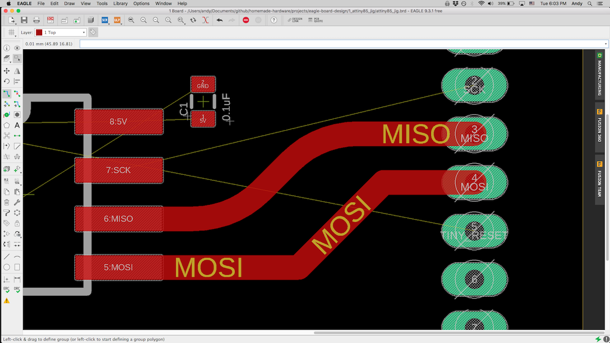A cool new feature in Eagle is that you can have your routes interact with other routes in three different ways: 1) ignore, 2) avoid, and 3) push.
By default, route will start out in avoid mode. You can change the mode by selecting the button at the top of the screen.
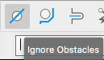 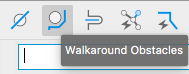 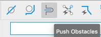Note: the "push" mode will not work on routes with rounded edges (radius). It only works with 45 and 90 degree (no radius) routes.
Here's an image showing the "push" mode in action.
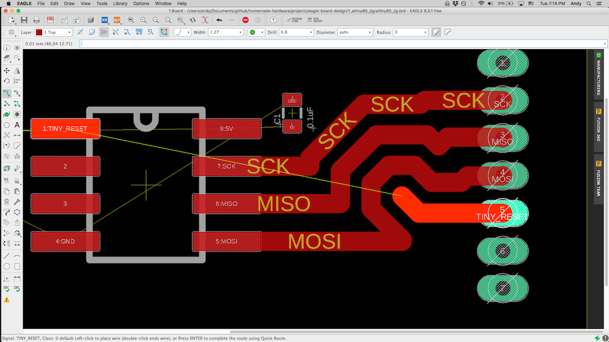You cannot delete a route (because that happens in the schematic), bit you can use the "Ripup" command to undo a route's drawing.
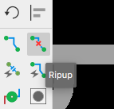Click the "Ripup" icon, and clicking a drawn route will undo it and show the yellow line again.
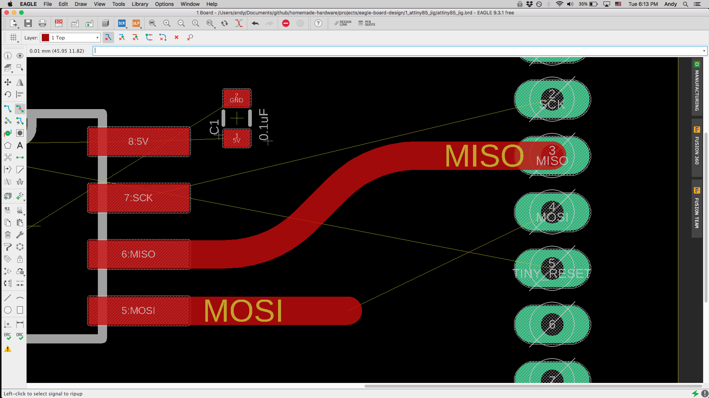There are some options at the top to control how much the "Ripup" commands removes at once. When you click, you can change these to have it remove an entire route, or different sections of it.
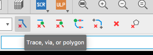PCBs often have two layers of copper, one on the top of the board, and the other on the bottom. A "Via" is a hole place inside a route, that connects the top layer to the bottom layer. This allows a route to pass back and forth between the top and bottom of our PCB.
Vias might be the biggest differences between DIY PCBs and professional PCBs. On DIY PCBs, they can add a little to a lot of complexity to making it, so try and avoid creating vias whenever you can.
A via is most commonly created while running the "Route" command. Start drawing a route, and while moving the route around, press the SPACE bar. A green circle will appear on your route.
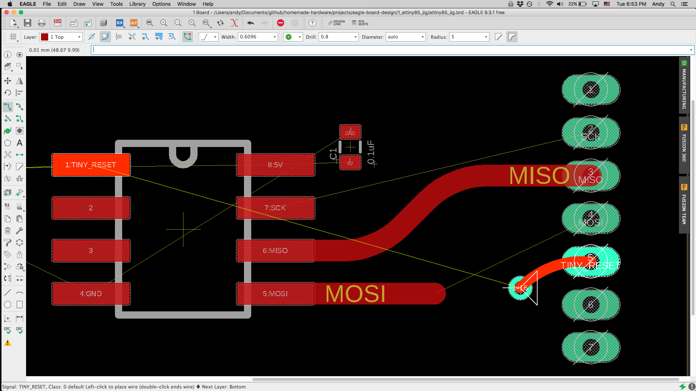This hole can be place by clicking. Then, you will now be drawing a route on the 16 Bottom (blue) layer.
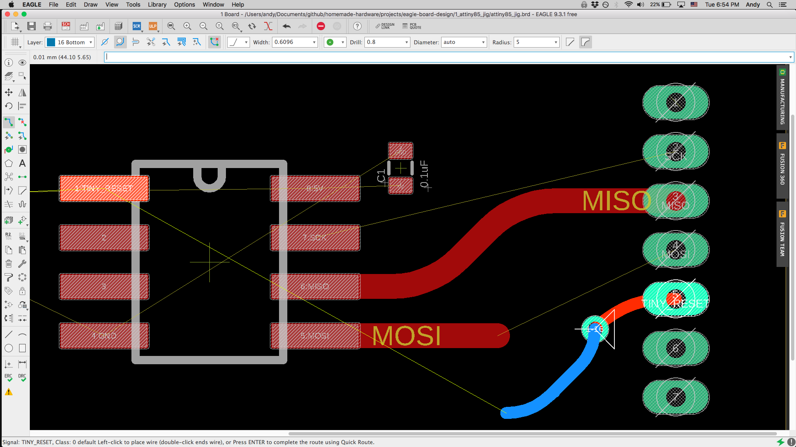On the bottom layer, we do not have to worry about crossing over routes on the 1 Top (red) layer. Draw the bottom route, and create another via to bring the route back to the top.
{kind=link}
{kind=link}
{kind=link}
{kind=link}
{kind=link}
{kind=link}
{kind=link}
{kind=link}
{kind=link}
{kind=link}
{kind=link}
{kind=link}
{kind=link}
{kind=link}
{kind=link}
{kind=link}
{kind=link}
{kind=link}
{kind=link}
{kind=link}
{kind=link}
{kind=link}
{kind=link}
{kind=link}
{kind=link}
{kind=link}
{kind=link}
{kind=link}
{kind=link}
{kind=link}
{kind=link}
{kind=link}
{kind=link}
{kind=link}
{kind=link}
{kind=link}
{kind=link}
{kind=link}
{kind=link}
{kind=link}
{kind=link}
{kind=link}